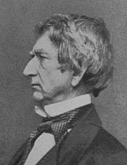

|

|

|
|
|
Lawyer, governor, senator and secretary of state, William
Henry Seward was one of the leading Republicans of his era.
Seward was born in Florida, New York on May 16, 1801.
Graduating from Union College in 1820, he was admitted to
the New York bar two years later. Son of a businessman and a
county judge, Seward married a judge's daughter, Frances
Miller. They settled in Auburn, New York to raise a family.
Their son, Frederick William Seward, served as his father's
assistant secretary of state and close advisor during the
most turbulent years of the elder Seward's career.
William Seward rose rapidly in New York state politics,
advancing from Whig Party leader in the state senate to the
governor's office while still in his thirties. After his
second gubernatorial term, Seward built his legal practice
only to return to politics again in 1849, when he advanced
to the U.S. Senate.
Seward quickly established himself as a powerful figure
in Congress, one associated particularly closely with
abolitionism. He is known during the 1850s for two
controversial remarks. During a debate over the Compromise
of 1850, Seward urged senators to ban slavery in the
territories entirely. Replying to southern attacks that such
a ban was unconstitutional, Seward asserted that there was a
"higher law" than the U.S. Constitution.
Echoing the rhetoric of abolitionists like William Lloyd
Garrison, Seward earned a reputation in some circles as a
radical abolitionist--a reputation that would prove both
incorrect and damaging to his career. Again, in a speech at
Rochester, New York, Seward denigrated compromise with slave
owners, declaring that North and South were engaged in an
"irrepressible conflict" between two fundamentally different
views of America's future.
When the Whig Party collapsed following the
Kansas-Nebraska Act, Seward joined the new Republican Party,
instantly becoming the leading candidate for the 1860
Republican presidential nomination. But Seward's flirtation
with abolitionism--still largely unpopular in the
North--alienated more moderate Republicans. During the 1860
Republican convention, Seward watched his support ebb, while
Abraham Lincoln's swelled. Despite the disappointment,
Seward actively campaigned for Lincoln throughout the fall,
and accepted Lincoln's invitation to serve as secretary of
state.
By 1861, Seward had been in politics for nearly thirty
years. Lincoln, in contrast, had served a single term as an
Illinois congressman. Seward made the mistake of assuming
that the inexperienced President would gratefully rely on
his seasoned cabinet member to craft the new
administration's key policies. Alarmed at what he took to
be Lincoln's vacillation in the face of imminent Southern
rebellion, Seward sent the President his recommendations for
a more robust policy. The United States, Seward suggested,
ought to abandon Fort Sumter while arresting rebels
throughout the United States. Meanwhile, Lincoln should
rally the country around the Monroe Doctrine and challenge
Spanish and French meddling in the Americas.
Once at war, the people would forget their regionalism
and rally to the flag. Such a policy, Seward concluded,
would need a strong hand to guide it---presumably, his own.
Seward misread the depth of Southern commitment to secession
and seriously misjudged Lincoln himself. Lincoln's reply,
while cordial, made it clear that Lincoln himself would be
making the decisions.
Despite the awkward start, Seward proved himself to be an
essential and loyal member of Lincoln's cabinet. He promptly
dispatched Charles Francis Adams, son and grandson of
Presidents, to counter confederate diplomacy in London,
issuing veiled (and not so veiled) threats to go to war if
the British recognized the Confederacy. In one sense, these
threats were little more than bluff; the United States could
not have simultaneously defeated the British and the
Confederacy both. However, remarked Seward to French
diplomats, though the United States might lose such a war,
its enemies would know they'd been in a fight. Strong
words, combined with more tactful diplomacy, worked.
Despite their economic interest in continued cotton exports,
neither British nor French governments could afford to add a
protracted conflict in North America to their obligations
elsewhere in the world.
Seward handled three diplomatic crises with particular
success. First, he persuaded French and British governments
to withhold recognition from the Confederacy and to respect
the Union blockade of Southern ports. Second, he forced the
British to cease outfitting Southern privateers such as the
Alabama, though the so-called "Alabama Claims" were not
settled until well after the war's end. Finally, Seward
released two Confederate spies, captured from a British
vessel in the "Trent Affair". Making this concession over
the loud objections of congressional Republicans won Seward
the respect of the British government officials, who came to
see the American Secretary of State as tough and
shrewd---but a man with whom they could work.
At the end of the war, Seward was injured in a carriage
accident and was bedridden when both he and his son,
Frederick, became the victims of an attempted assassination
attempt by Lewis Paine, one of the coconspirators with John
Wilkes Booth. On the evening of April 14, 1865 Paine's
attempt on the Seward father and son's lives failed, while
Booth's succeeded.
Seward recovered and remained Secretary of State after
Lincoln's death, crafting an American foreign policy whose
expansionism and hemispheric ambitions prefigured those of
Theodore Roosevelt half a century later. Citing the Monroe
Doctrine, Seward pressured Napoleon III to withdraw French
troops from Mexico, where they had established an "empire"
at the start of the American Civil War.
Seward urged Congress to authorize the building of a
canal across Panama, and to annex the Danish West Indies,
Hawaii, Midway, and Santo Domingo. With the exception of
Midway, Congress was unwilling. Many Northerners believed
that the Civil War had erupted over the disposition of
territories conquered from Mexico in 1848. Most wanted
national resources devoted to reconstruction. Even so,
Seward's policies, while dormant in the 1870s, would catch
fire again in the 1890s.
Congress did approve one of Seward's initiatives,
however, authorizing $7 million to purchase Alaska from the
Russian Empire. Seward's opponents derisively labeled the
undeveloped Arctic wilderness "Seward's Folly" and "Seward's
Icebox". Seward, however, correctly predicted that the
region's value to the United States would not be apparent
for another generation. It became so in 1898, when gold was
found in the Klondike.
Seward remained loyal to Andrew Johnson through the
President's impeachment trial. Supporting Johnson's generous
and gentle treatment of white ex-Confederates, Seward urged
Radical Republicans to treat the defeated opponents with the
mercy they now deserved. Seward showed little interest in
the problems faced by the freed people. Seward had believed
slavery to be wrong, but he also believed Africans to be
inferior to Europeans and their subordinate status to be
inevitable and natural.
These views alienated Seward from the mainstream of
Republican opinion; Republican president Ulysses S. Grant
had little use for a Johnson administration loyalist. This
time, Seward's retirement from public life proved permanent.
Seward died at his home in Auburn, New York on October 10,
1872.
Source: Joan Waugh, ed., Facts on File Encyclopedia of American
History: Civil War and Reconstruction, 1856 to 1869 (New York: Facts on
File, 2003), 313-315.
|